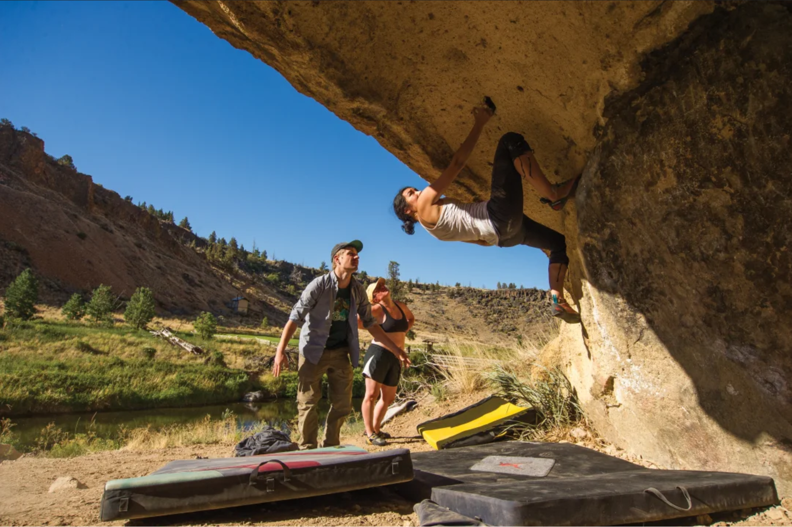

Recreational outdoor bouldering offers a distinct and immersive experience compared to its indoor counterpart. Instead of climbing on artificial walls, outdoor bouldering enthusiasts seek out natural rock formations in picturesque outdoor settings. This form of climbing allows individuals to connect with nature and experience the thrill of conquering real rock challenges. Outdoor bouldering presents a different level of unpredictability, with ever-changing weather conditions, varying rock textures, and the need for advanced route-finding skills. It also emphasizes a deeper appreciation for the environment and a greater sense of adventure. While indoor bouldering offers year-round accessibility and a controlled environment, outdoor bouldering rewards climbers with the serenity of nature and a sense of exploration, making it a compelling alternative for those seeking to combine physical activity with the joys of the great outdoors.